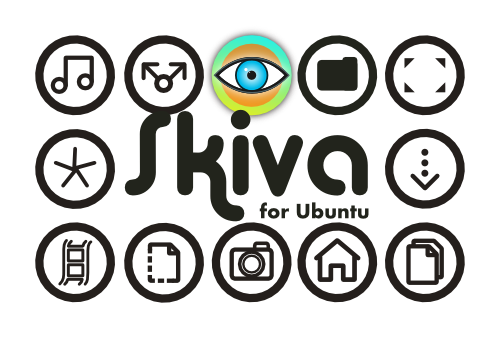

About
Skiva is a circle based icon theme designed for the GNOME 3 desktop on Ubuntu, but they can be used on any debian based desktop environment. It is a work in progress that so far consists of the main Ubuntu folder icons and 19 application icons, but icons are added frequently. I decided to share this personal project with the community in order to get some feedback and encouragement for further development. Inspiration I have drawn from Malyss' Uniblack theme you can find here http://malysss.deviantart.com/art/malys-uniblack-update-11-09-2012-301085946. Uniblack is a wonderful icon theme, but I found the application icons hard to use due to their uniformity in color and style.
Skiva is a project that aims to bring a comprehensive circle based icon theme with color and character to the Ubuntu desktop and beyond.
Installation
On Ubuntu install it by extracting the zip file or cloning the repository in ~/.local/share/icons/, or in /usr/share/icons/
Legal notice
Personal use is free. Please contact me for all other uses. Also see http://particle-in-a-box.com
Author
Bruno Patyn
bruno (at) particle-in-a-box.com
http://particle-in-a-box.com/
Supported icons
Places
- folder-desktop
- folder-home
- folder-documents
- folder-download
- folder-dropbox
- folder-music
- folder-pictures
- folder-publicshare
- folder-templates
- folder-videos
- user-bookmarks
- user-desktop
- user-home
Apps

comments powered by Disqus